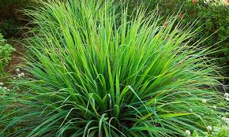

Capim-limão (Cymbopogon citratus)
Visualização 3D
Carregando modelo 3D...
Iniciando...
Gire o modelo com o mouse e use a rodinha para zoom
Descrição Botânica
É uma erva de cheiro cítrico, com folhas longas e cortantes. Forma moitas altas, de até 2 metros, e é muito comum em hortas caseiras.
Propriedades Medicinais
- Calmante: Ajuda a reduzir a ansiedade e melhorar o sono
- Antigripal: Alivia sintomas como febre e tosse
- Digestivo: Auxilia no funcionamento do fígado e intestino
- Antimicrobiano e antifúngico: Atua contra microrganismos nocivos
- Inseticida: Ajuda a repelir insetos, como o mosquito da dengue
Modos de Uso
Chá das Folhas
Como fazer:
- Triture 1 colher de chá das folhas
- Despeje 150 ml de água quente (não fervida) por cima
- Abafe por 10 minutos, coe e tome de 2 a 3 vezes ao dia
Inalação com Óleo Essencial
Pingue 3 a 6 gotas do óleo em um pano ou difusor e inale por até 10 minutos.
Cuidados e Contraindicações
- Evite durante a gravidez — pode causar aborto
- Não usar em excesso — pode irritar o estômago
- Evite combinar com sedativos ou remédios para pressão
- Não deve ser consumido cru (em saladas ou sucos) — as folhas são cortantes
Curiosidades
- É muito usado em cosméticos, sabonetes e perfumes
- Tem cheiro agradável e fresco, parecido com limão
- É uma das plantas mais cultivadas em hortas medicinais
- Suas folhas também ajudam a espantar baratas e mosquitos
Monografia Científica
Baixar PDF Completo
Monografia elaborada no Projeto de Extensão "Uso seguro de plantas medicinais pela população"
Voltar para Catálogo